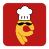
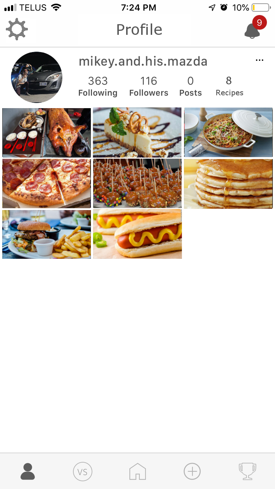
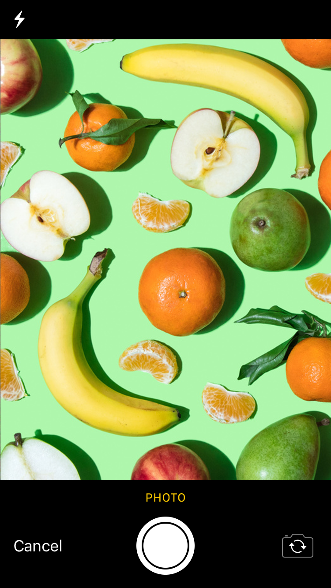
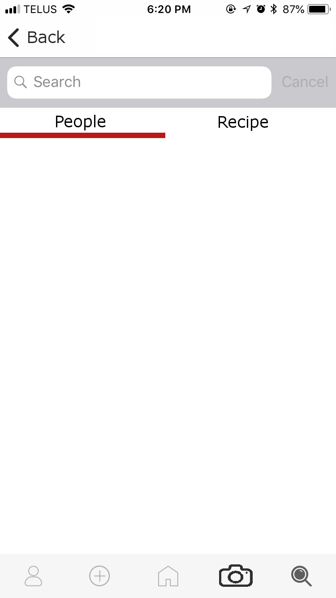
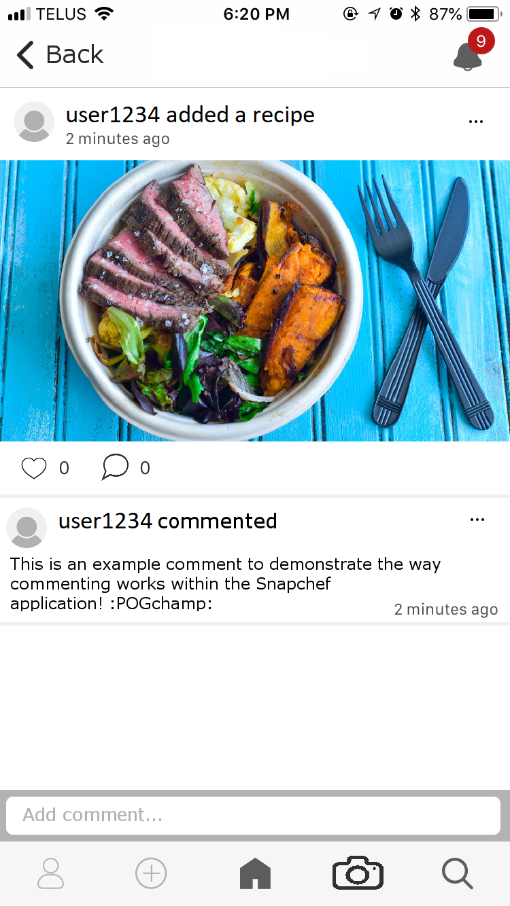
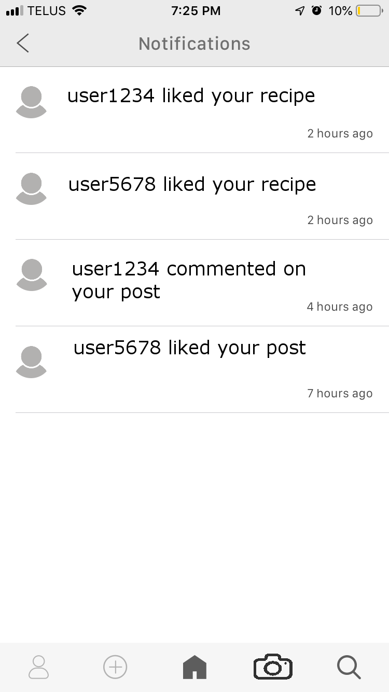

User Interface Design
Colours
| Colour |
HTML colour code |
Usage |
| |
BC1818 |
- Logo
- Clickable or tappable text on white background
- Login background colour
|
| |
FFFFFF |
- Main Background
- Text with red(BC1818) or grey(5D5D5D) background
|
| |
E5E5E5 |
|
| |
000000 |
|
| |
5D5D5D |
- Currently selected tab
- Subtext/Descriptions
- Buttons on red(BC1818) background
|
| |
B3B3B3 |
|
Font
- iOS: San Francisco
- Android: Roboto
App Icon and Logo

Module Interface
The following are examples of what the final product may look like along with short descriptions of interactive fields from left to right, top to bottom. These are prototypes only and the final product is subject to change
Login Screen
This is the screen the user sees when first opening the app or after signing out

| Item name |
Type |
Function |
| Username input |
Text box |
This is where the user enters their username to login |
| Password input |
Text box |
This is where the user enters their password to login |
| Register button |
Button |
Brings up the register menu for new users when clicked/tapped |
| Login button |
Button |
Attempts a login given what is currently in Username input and Password input |
| Privacy Policy button |
Text button |
Brings up a document containing the terms of service and privacy policy |
Taskbar
The taskbar allows the user to switch between different sections of the application. This is displayed at all times for logged in users

| Item Name |
Type |
Function |
| Profile tab |
Button |
Switches to the users profile page |
| Add recipe tab |
Button |
Switches to the add recipe page |
| Homepage tab |
Button |
Switches to the home page |
| Camera tab |
Button |
Switches to the photo upload page |
| Search tab |
Button |
Switches to the search page where users may choose to search for recipes or users |
Current tab denoted by a dark grey(5D5D5D) color fill, deselected tabs denoted by a light grey(B3B3B3) outline
NOTE: Camera tab useless due to the ability to post from homepage and add recipe through a taskbar button, will be excluded in future iterations
Profile screen
This is the screen displayed when the user clicks/taps on Profile tab

| Item name |
Type |
Function |
| Settings button |
Button |
Brings up the settings menu |
| Notifications button |
Button |
Brings up the notifications menu |
| User options button |
Button |
Brings up a pop up menu asking if the user would like to flag the current profile, block the user or cancel the operation |
| Following button |
Text button |
Shows a list of all users that the current profile follows |
| Followers button |
Text button |
Shows a list of all users that follow the current profile |
| Posts button |
Text button |
Shows a list of all posts made by the current user |
Recipe upload screen
This is the screen the user sees when attempting to upload a recipe to the database

| Item name |
Type |
Function |
| Cancel button |
Button |
Returns to the previous menu |
| Upload button |
Button |
Finalizes all data, collects it and adds to the users profile |
| Following tab |
Button |
Brings up the feed from only followed users |
| Recipe name change button |
Text button |
Brings up the keyboard so the user may edit the name of the recipe |
| Image tab |
Button |
Brings up pop up menu asking the user if they would rather choose from the device gallery, take a photo with the device camera or cancel the operation |
| Ingredients tab |
Button |
Switches to ingredients tab (seen here in prototype) |
| Recipe tab |
Button |
Switches to recipe tab (contains a simple text box for the user to type the recipe) |
| Description tab |
Button |
Switches to Description tab (contains a simple text box for the user to describe the dish) |
| Add ingredients button |
Text button |
Brings up a temporary menu where the user types the name, brand and quantity of the ingredient |
| Edit ingredient button |
Text button |
Brings up the same temporary menu when the ingredient was added, where the user may change the data |
NOTE: taskbar is excluded, duplicate buttons not listed in table
Homepage screen
This is the screen the user sees after logging in or when the app is opened and the user has previously logged in

| Item name |
Type |
Function |
| Settings button |
Button |
Brings up the settings menu |
| Title button |
Button |
Refreshes the current feed (community/following) and returns to the top of the feed (newest posts) |
| Notifications button |
Button |
Brings up the notifications menu |
| Following tab |
Button |
Brings up the feed from only followed users |
| Community tab |
Button |
Brings up the feed from all users |
| Post text box |
Text box |
User can type text to be posted |
| Add photo button |
Button |
Brings up pop up menu asking the user if they would rather choose from the device gallery, take a photo with the device camera or cancel the operation |
| Post button |
Button |
Takes the text in Post text box and the image from Add photo button and attempts to add the post to the user profile |
| Username button |
Text button |
Brings up the associated users account page |
| Post options button |
Button |
Brings up a pop up menu asking if the user would like to flag the post, block the user who uploaded it or cancel the operation |
| Like post button |
Button |
Adds a "like" to the post |
| Comment post button |
Button |
Changes view to post view and the user may begin typing in a provided text box |
NOTE: taskbar is excluded, duplicate buttons not listed in table
Photo screen
This is the screen displayed when the user clicks/taps on Add photo button

| Item name |
Type |
Function |
| Flash button |
Button |
Enable camera flash, disable camera flash or set camera flash to automatic |
| Cancel button |
Text button |
Returns to previous screen |
| Take photo button |
Button |
Takes a photo to be used, and returns to the previous page with the image inserted/added |
| Reverse camera button |
Button |
Toggles between front facing and rear facing camera |
Search screen
This is the screen displayed when the user clicks/taps on Search tab

| Item name |
Type |
Function |
| Back button |
Text button |
Return to previous screen |
| Search field |
Text box |
Brings up keyboard where the user may type the name of another user or a recipe name |
| Cancel search button |
Text button |
Hides the keyboard |
| People tab |
Text button |
While this is selected, a search will return all users who match the criteria |
| Recipe tab |
Text button |
While this is selected, a search will return all recipes that match the criteria |
View post screen
This is the screen displayed when the user clicks/taps on a community post

| Item name |
Type |
Function |
| Back button |
Text button |
Return to previous screen |
| Notifications button |
Button |
Brings up notifications screen |
| Username button |
Text button |
Brings up the associated users account page |
| Post options button |
Button |
Brings up a pop up menu asking if the user would like to flag the post, block the user who uploaded it or cancel the operation |
| Add comment text box |
Text box |
Brings up the keyboard for a user to type a comment with |
| Comment options button |
Button |
Brings up a pop up menu asking if the user would like to flag the comment, block the user who uploaded it or cancel the operation |
NOTE: taskbar is excluded, duplicate buttons not listed in table
Notifications screen
This is the screen displayed when the user clicks/taps on Notifications button

| Item name |
Type |
Function |
| Back button |
Text button |
Return to previous screen |
| View notification button |
Text button |
Brings up the post or recipe associated with the notification |
NOTE: taskbar is excluded, duplicate buttons not listed in table